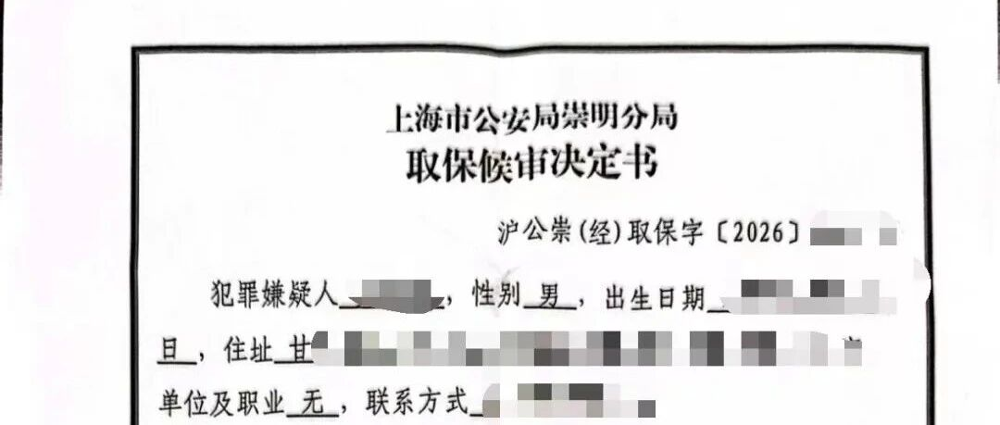

办案实录 （续）|三顾茅庐被害人公司，一张谅解书背后的37天（持续更新）

上一篇，我们记录了客户第一次咨询的全过程——A因涉嫌挪用资金罪被刑拘，家属带着焦虑与无助找到我们。高律师从主体身份、资金用途、新法量刑三个维度初步拆解了辩护方向。
今天这篇，是真正的硬仗——从看守所会见，到三次登门谈判，再到审查逮捕阶段最后48小时的生死时速，最后以最小的代价实现取保候审。
以下，是完整的办案实录。
01 第一次会见：两个关键问题
拿到家属的委托手续后，高律师第一时间会见了A。
看守所的会见室不大，A穿着识别服走进来，整个人瘦了一圈。距离他被刑事拘留，已经过去了将近两周。
高律师开门见山：“两个问题，你必须如实告诉我——第一，公司有没有书面的财务审批制度？第二，你转那笔钱的时候，B到底知不知道？”
A沉默了几秒，然后说了一句话，让高律师心里有了底——
“公司从来没有过财务审批制度，我和B合作这么多年，资金调拨都是口头商量。那笔钱转出去之前，我跟他打过招呼，他没反对。”
第一个突破口，出现了。
如果公司根本没有规范的财务审批流程，那么A作为负责经营的管理合伙人，其资金调拨行为究竟是刑事犯罪还是企业内部治理纠纷，本身就有巨大争议。很多法院判例表明，没有“虚报、冒领、截留”等行为，仅仅是股东之间违规调用资金，不宜轻易入罪。
但法律上的论证再充分，也绕不开一个现实问题——钱回不来，被害单位的怒火就消不了。

02 三顾茅庐被害人公司：一场艰难的谈判
高律师很清楚：没有被害单位的谅解，一切辩护都是空中楼阁。
谅解书在审查逮捕阶段的价值，怎么强调都不为过。最高人民检察院的相关文件明确规定，双方当事人达成和解、取得被害人谅解，是犯罪嫌疑人不具有社会危险性的重要表现，可以作为不批准逮捕的重要考虑要素。2026年新施行的审查逮捕质效标准更是把“社会危险性”从可选项变成了必审项——取保候审足以防止社会危险性的，依法不捕。
但谅解书不会自己从天上掉下来。A的家属虽然愿意退赔，但400万的窟窿不是小数目，一次性拿不出来。
高律师和团队孙律师商量后，定下了一个策略：谈，必须谈。不仅要谈，还要谈出一个双方都能接受的方案。
第一次登门，被害单位B公司的办公楼里，B的态度很硬：“钱亏了400万，人进去了，没什么好谈的。”
高律师没有急于求成。他坐下来，从三个层面跟B分析利弊——
第一，从刑事追诉的角度。 如果A最终被判刑，B能拿回多少钱？刑事追缴程序漫长，而且A的全部财产要被查封冻结，反而可能影响后续的退赔能力。
第二，从企业经营的角度。 A是公司的管理合伙人，公司运营离不开他。如果A长期被羁押，公司业务谁来管？损失的可能不止400万。
第三，从和解的实际效果。 如果B愿意给一个还款方案，A的家属会全力筹款。分期履行，第一笔先付一部分，让B看到诚意；后续按约支付，B的资金风险反而比走刑事程序更小。
B沉默了很久，说了一句：“我考虑考虑。”
第二次登门，B的态度松动了一些，但还在犹豫——“万一他们后面不付了怎么办？”
高律师当场承诺：“还款协议我们可以设计违约条款和担保条款，如果A家属违约，B完全可以撤回谅解，不影响刑事追诉。这对您只有好处，没有坏处。”
第三次登门，B终于点了头。
03 第一笔50万到账，谅解书签了
还款协议的条款敲定得很细：总额400万，分期支付，第一笔50万在签署协议后三日内支付，剩余部分按年度分期偿还。
A的家属东拼西凑，在截止日期前把50万打到了B公司账上。
2026年6月17日，B公司在刑事谅解书上盖了章——
“家属已经和我司达成还款协议，并退还了部分挪用资金……鉴于他们已经积极弥补错误，认真悔过，且考虑到是初犯、偶犯，本人法律意识淡薄……表示谅解，希望司法机关不再追究其刑事责任，同意对其减轻或免除处罚。”
谅解书，拿到了。
距离A被刑事拘留，已经过去了33天。

04 审查逮捕：最后48小时
拿到谅解书的当天，高律师立刻着手撰写《不批准逮捕法律意见书》。
根据《人民检察院刑事诉讼规则》第一百四十条，犯罪嫌疑人涉嫌的罪行较轻，且没有其他重大犯罪嫌疑，具有积极退赃、赔偿损失、确有悔罪表现等情形的，可以作出不批准逮捕的决定。2026年新规进一步明确，轻罪、认罪认罚、退赃退赔、初犯偶犯、达成谅解的，原则上不批捕。
高律师的法律意见书重点论证了三个层面：
第一，A不具有社会危险性。 A有固定居所，有稳定家庭，本次是初犯、偶犯，案发后主动配合调查，认罪认罚。
第二，被害单位已出具谅解书。 双方达成还款协议，第一笔50万已实际履行，社会矛盾已得到实质性化解。
第三，采取取保候审足以保证诉讼顺利进行。 A愿意全额缴纳保证金，且家属愿意提供担保。
法律意见书在审查逮捕期限的第5天提交到了上海市崇明区人民检察院。
2026年6月18日，崇明区检察院作出不批准逮捕决定——
“鉴于犯罪嫌疑人贾某自愿认罪认罚、无社会危险性，本院根据《中华人民共和国刑事诉讼法》第九十条、《人民检察院刑事诉讼规则》第一百四十条等规定作出不批准逮捕决定。”
同日，上海市公安局崇明分局依据《刑事诉讼法》第九十一条第三款，决定对A取保候审。崇明区看守所依据《刑事诉讼法》第九十八条，予以释放。
从5月15日被拘留，到6月18日重获自由——整整34天。

写在最后：为什么这张谅解书如此关键
回头看这个案子，谅解书的作用绝不仅仅是一张纸。
在审查逮捕阶段，检察官最关心的问题不是“这个人有没有罪”，而是 “不抓他，会不会出事” ——会不会逃跑、会不会毁灭证据、会不会继续危害社会。
而谅解书+还款协议+第一笔实际付款，构成了一个完整的证据链，向检察官传递了一个清晰的信息：双方矛盾已经化解，社会关系已经修复，取保候审足以保证案件顺利进行。
2026年新施行的审查逮捕质效标准，把“社会危险性”的审查从形式走向实质。够罪不等于必捕——这个理念正在成为司法实践的新常态。
但对当事人和家属来说，最重要的启示或许是：刑事辩护的战场，不只在法庭上，更在法庭之外。
从第一次会见核实关键事实，到三次登门谈判促成和解，再到审查逮捕阶段精准提交法律意见——每一步都环环相扣，缺一不可。
本文系真实办案记录，当事人及被害人信息已做脱敏处理，将持续更新。